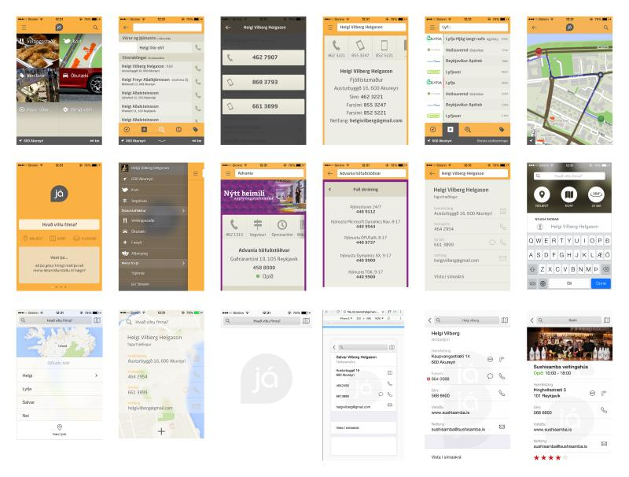

Verktakavinna, hönnun notendaviðmóts ofaná öflugan hugbúnað þeirra. Setti upp Design System hjá þeim til að nota áfram.
Verktakavinna, fegraði UI-ið þeirra og skrifaði CSS fyrir þá.
Fyrir
Eftir
Bjuggum til fyrstu útgáfuna af Já.is appinu. Hér má sjá margar ítranir af útlinu á appinu.
Endurhönnuðum vefsíðuna með einfaldleika og hraða í huga.
Tók þátt í hönnunarsamkeppni 2010 og þetta lógó varð fyrir valinu. Lógóið myndar stafina S og N úr f-lyklinum.
3d veggflísar með tilvísun í stuðlaberg.

Elska að semja tónlist. Gaf út plötu 2006, og gerði eitt tónlistarmyndband.